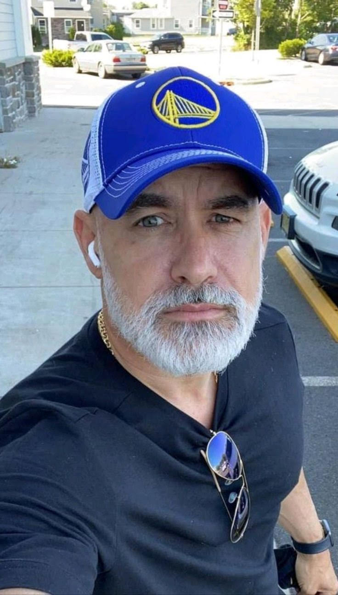

câncer de próstata tem cura. A prevenção é o primeiro passo
NOVEMBRO AZUL
#novembroazul
SINTOMAS
Dificuldade para urina
Sangue na urina ou no sêmen:
Dor pélvica, lombar ou nos quadris
Aumento da frequência urinária:
Fadiga
Esta com duvidas? Entre em contato
novembro.azul@gmail.com
(43) 9890-8930
TRATAMENTOS
Cirurgia (Prostatectomia Radical):
É uma cirurgia para remover a próstata e,
geralmente, as vesículas seminais, e é um
tratamento comum para o câncer de próstata
localizado.
Radioterapia:
é um tratamento que usa radiações ionizantes
para destruir ou impedir o crescimento de
células cancerígenas, podendo ser usada para
tratar diversos tipos de câncer.
Terapia Hormonal:
tratamento que visa restaurar ou complementar os
níveis hormonais no corpo, geralmente para
aliviar sintomas da menopausa ou outras
condições relacionadas à deficiência hormonal
Por que o Diagnóstico Precoce é Tão Importante?
90% a 95% de curados na fase inicial
90% a 95% de curados na fase inicial
PRENVENÇÃO
Embora não exista uma forma 100% garantida de evitar
a doença, há hábitos e atitudes que podem reduzir
significativamente o risco e, principalmente,
garantir o diagnóstico precoce, que é a chave para a
cura.
Uma dieta rica em frutas, vegetais e grãos
integrais, e pobre em gorduras saturadas, pode
ser benéfica. Alimentos como tomate (rico em
licopeno)
Exercitar-se regularmente ajuda a manter um peso
saudável e contribui para a saúde geral.
Fumar aumenta o risco de vários tipos de câncer,
incluindo o de próstata. E o consumo excessivo
de álcool pode ser um fator de risco.
Depoimentos
Mateus S. Paulino.
"Descobrir o câncer de próstata foi um
susto, mas também um chamado para cuidar de
mim. Fiz o tratamento com fé, apoio da minha
família e excelentes médicos. Hoje estou
curado e mais grato pela vida do que nunca."
Roberto Martinez.
"A palavra 'câncer' assusta, mas a prevenção
e o diagnóstico precoce salvaram minha vida.
Fiz exames de rotina, descobri no início e
venci. Quero dizer a todos os homens: não
tenham medo de se cuidar."
Guberto Santos
"Achei que nunca fosse acontecer comigo.
Quando veio o diagnóstico, pensei em
desistir, mas encontrei força na minha
família e na minha fé. Hoje sou exemplo de
que é possível vencer e recomeçar com
alegria."
Guberto Santos
"A luta foi difícil, mas o apoio médico e
psicológico fizeram toda a diferença. O
câncer de próstata me ensinou a valorizar
cada momento e a importância de falar sobre
saúde masculina sem tabu."
Joao souza
"Fui fazer um exame de rotina, aquele famoso
PSA, e deu alterado. Na hora bateu o medo,
claro, mas fui atrás. Fiz biópsia e era
câncer. Felizmente, estava no começo. Fiz a
cirurgia e hoje estou curado. O segredo foi
não ter medo de ir ao médico. A vergonha
mata mais do que a doença."
Marcos Garcia
"Descobri o câncer já em estágio avançado,
com dores nos ossos. Foi um choque. Comecei
o tratamento com hormonioterapia e
quimioterapia. Tive dias difíceis, mas não
deixei de lutar. A fé, a família e o apoio
dos médicos me deram força. Ainda estou em
tratamento, mas com esperança."

Roberto Gimenez
"Receber o diagnóstico foi como levar um
soco no estômago. Fiz a prostatectomia, e
embora o câncer tenha sumido, tive efeitos
colaterais sérios. A disfunção erétil afetou
meu psicológico. Precisei de apoio da minha
esposa e até de terapia. Hoje, estou bem,
mas aprendi que o câncer atinge o corpo e
também a mente."
RCláudio S. Mariz
“Após o câncer, mudei tudo: alimentação,
exercícios e até minha forma de ver a vida.
O tratamento me desgastou, mas me deu outra
chance. Agora faço questão de falar com meus
amigos sobre prevenção. Se eu tivesse
ignorado os sintomas, talvez não estivesse
mais aqui.”
Olá, Sou o Dr. Rafael Meneze
Sou urologista com mais de 15 anos de experiência na
saúde do homem. Atuo com foco na prevenção,
diagnóstico e tratamento das doenças da próstata.
Acredito que a informação e o diálogo são essenciais
na luta contra o câncer de próstata.
Fico à disposição para tirar suas dúvidas. Conte
comigo!
Dúvidas Frequentes
Eduardo S.
"Tenho 52 anos e nunca fiz o exame de
próstata. Quando é a idade certa para
começar?"
Dr. Rafael Menezes
"A recomendação é iniciar os exames
de rastreamento a partir dos 50
anos. Porém, se houver casos na
família (pai, avô, irmão), o ideal é
começar aos 45. Quanto mais cedo,
maiores as chances de detecção
precoce e cura."
Paulo Ronaldo
"Senti vontade de urinar com mais
frequência e com dificuldade. Isso pode
ser sinal de câncer?"
Dr. Rafael Menezes
"Esses sintomas podem estar
relacionados a diversas condições,
como hiperplasia benigna da próstata
ou infecção. Mas é essencial
investigar. Um simples exame de
sangue (PSA) e toque retal ajudam a
identificar possíveis alterações."
Sergio L.
"Fui diagnosticado no estágio inicial.
As chances de cura são boas?"
Dr. Rafael Menezes
"Sim! O câncer de próstata, quando
descoberto cedo, tem altíssimas
chances de cura, acima de 90%. O
tratamento é planejado conforme cada
caso, e muitos pacientes vivem
normalmente após o tratamento."


COMPARTILHE SUA DUVIDA